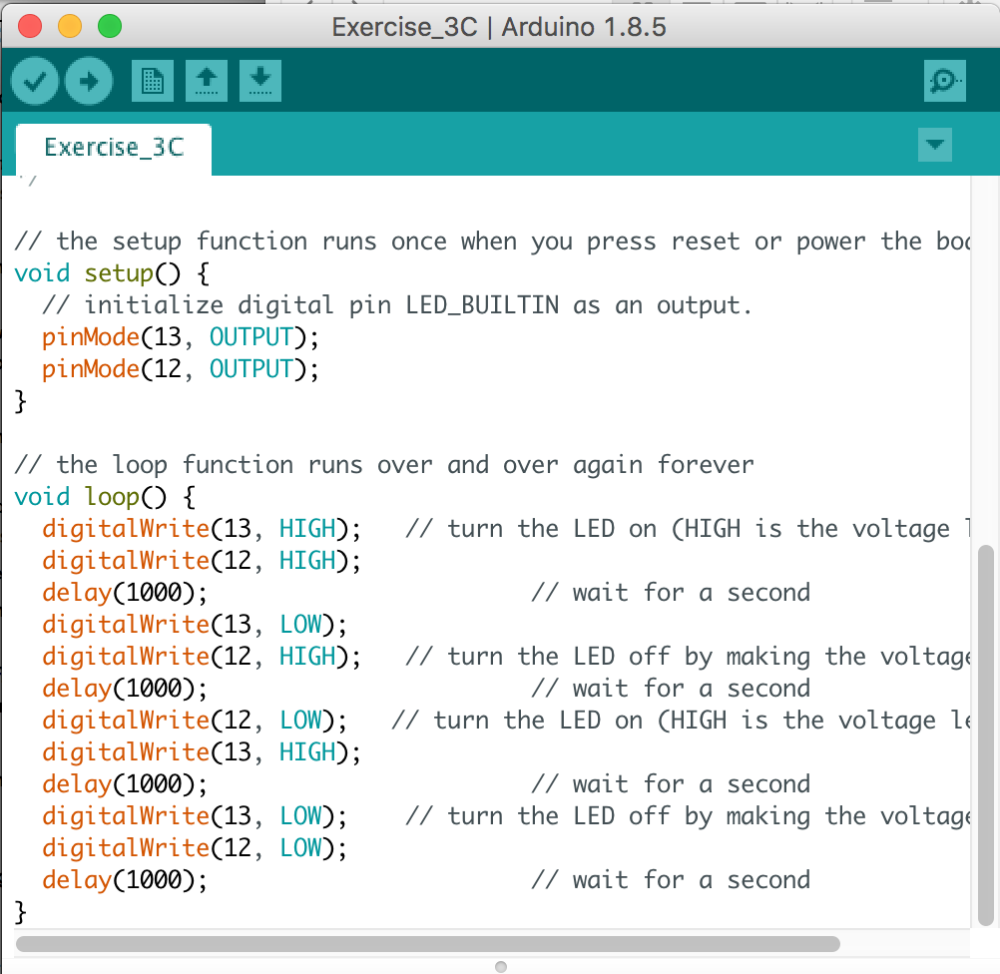
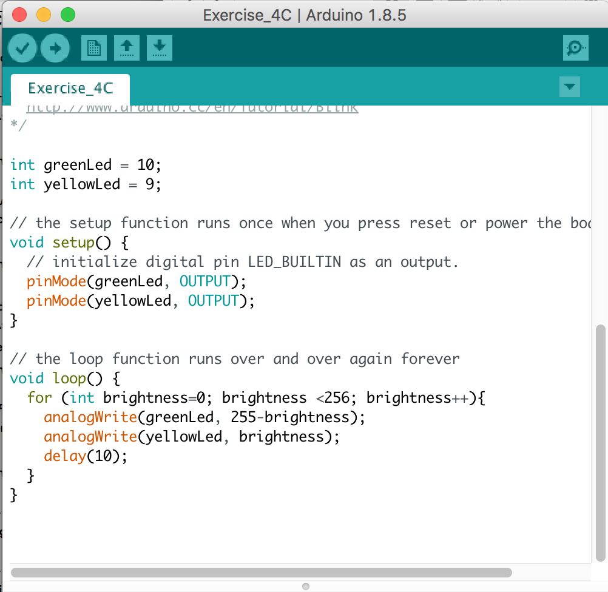
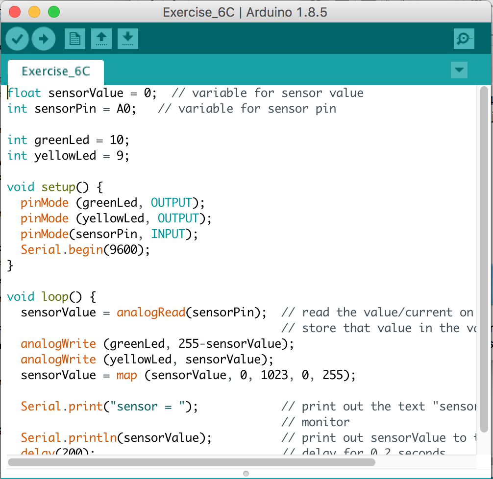
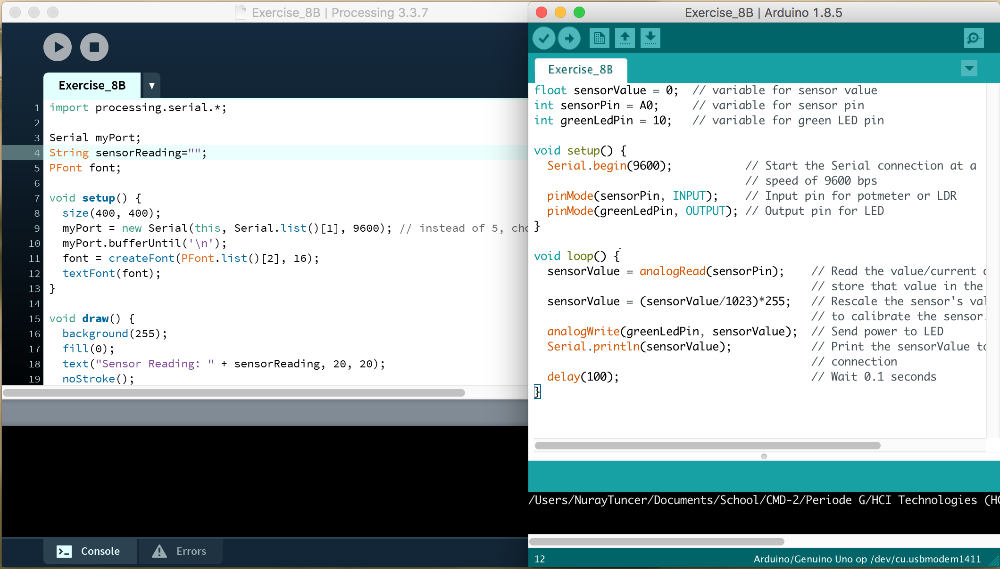
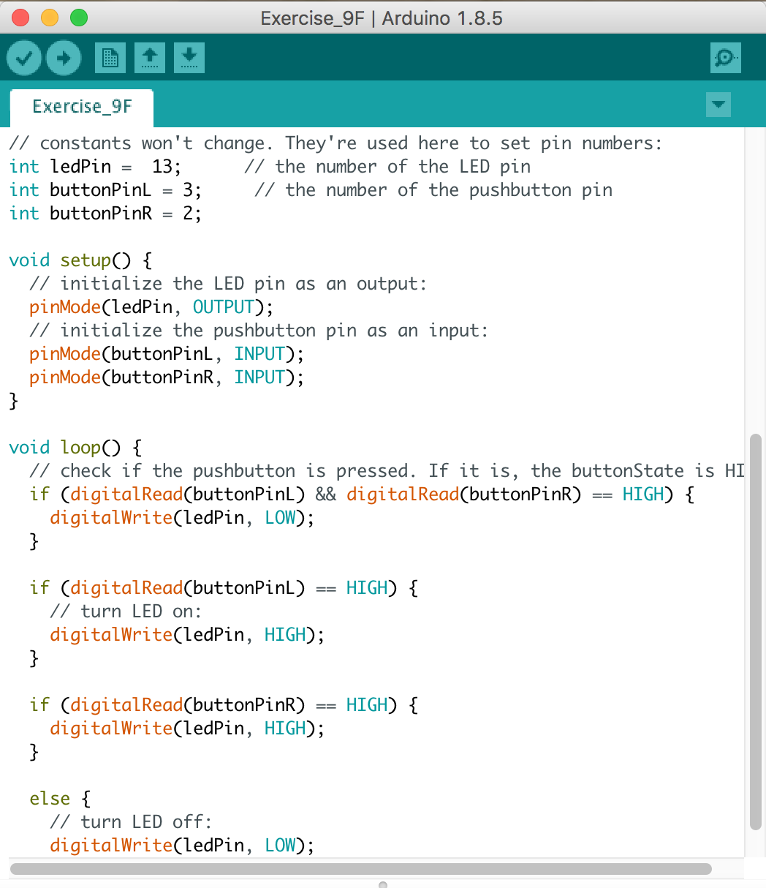
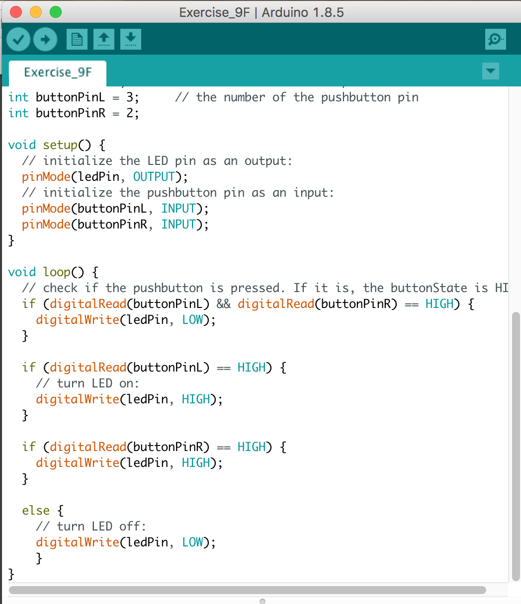
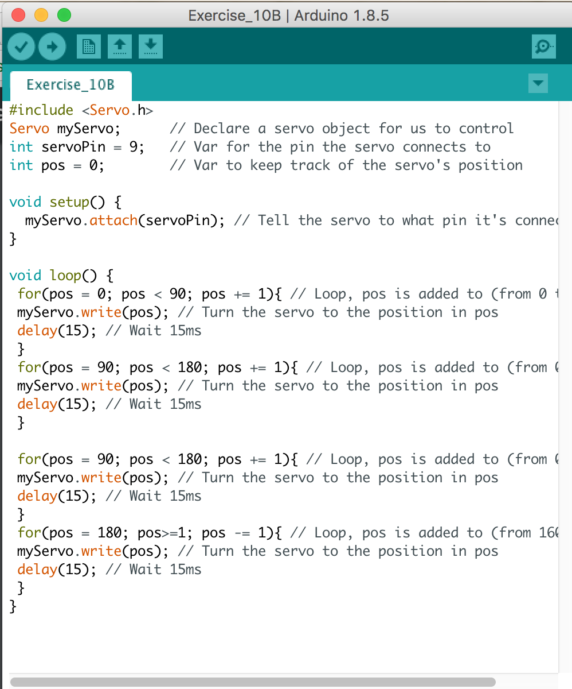
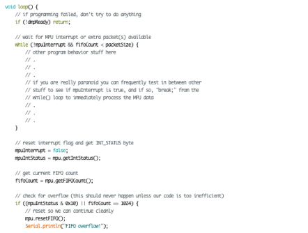
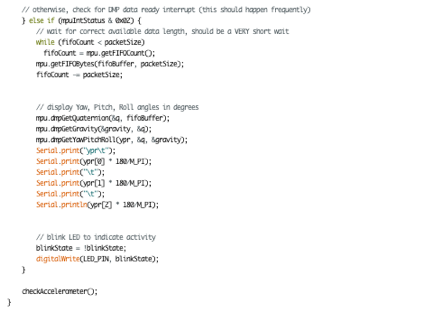

Arduino
Op deze pagina staan de opdrachten die ik tijdens de werkcolleges over het programma Arduino heb gemaakt. Bij alle opdrachten staat ook een korte uitleg en de code afgebeeld. Soms heb ik er ook video's aan toegevoegd om zo de uitkomsten van de codes te kunnen zien.
Exercise 3c
De eerste opdracht was best simpel, door gebruik te maken van een groen en geel LED-lampje. Deze twee lampjes heb ik om de beurt laten knipperen.
Exercise 4c
Na de lichtjes geknipperd te laten hebben, heb ik ze verschillende gradiatie gegeven van licht uitstraling. Om de beurt krijgen het groene en gele LED-lampje, een verschillende gradiatie van licht.
Exercise 6c
Bij deze opdracht werd het al wat ingewikkelder, hier was een wiskundige formule voor nodig. Iedere keer wanneer er aan het knopje wordt gedraaid, wordt het ene lampje lichter en de ander wat donkerder!
Exercise 7
Deze opdracht vind ik tot nu toe het leukst, door gebruik te maken van licht wordt het lichter! Wanneer de sensor voelt dat het donker wordt, brandt het lichtje feller. Wanneer het lichter is, brandt die minder vel. Helaas is dit niet zo duidelijk te zien op de video, hierom heb ik de code gefilmd.

Exercise 8b
Nu is het mij gelukt om Processing en Arduino met elkaar te combineren! Zo heb ik ervoor gezorgd, dat er een vorm die ik binnen Processing heb gemaakt beweegt met de code in Arduino. Door licht, beweegt de vorm binnen processing. Dit licht wordt opgenomen door de sensor, uit de vorige opdracht.
Exercise 9f
Deze opdracht was best ingewikkeld, het was namelijk de bedoeling om de lichtjes te laten branden door een knopje ingedrukt te houden. Wanneer er geen knopje ingedrukt is, of wanneer beide knoppen tegelijk in worden geklikt, horen de lichtjes niet aan te gaan.
Exercise 10b
Hier heb ik een klein robotje laten dansen, door de instructies die ik aan hem heb gegeven! Dit was enorm leuk, zo kun je hem allerlei pasjes leren en laten doen wat jij wilt.
Exercise 11b
Hierna heb ik het robotje meer pasjes geleerd en opeen andere manier later bewegen. Ook dit was weer leuk om te zien en te doen.
Exercise 12b
Met Arduino kan je zelfs muziek maken! Dit vervelende deuntje heb ik kunnen maken met mijn code.

Exercise 13e
De laatste opdracht vond ik enorm moeilijk, hier heb ik zelf en samen met anderen echt heel lang aan gewerkt. Helaas is het niets geworden en hebben we het uiteindelijk gelaten voor wat het is. Eigenlijk was de opdracht het afspelen van het geluidje, zodre het bord op wordt getild. Dit is mij niet gelukt en ik weet echt niet wat het probleem zou kunnen zijn...
 